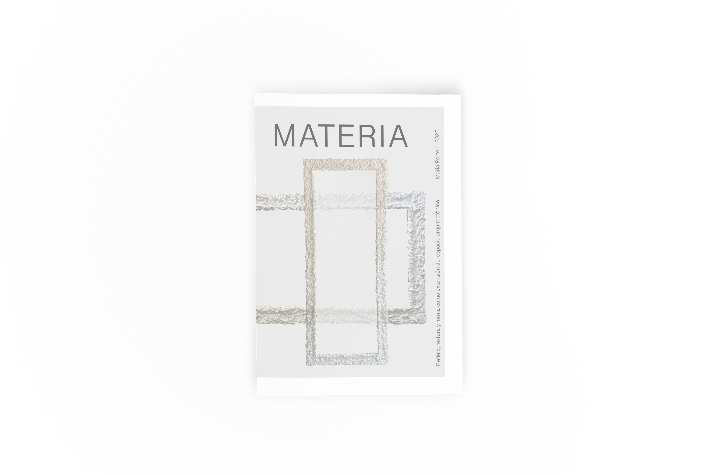
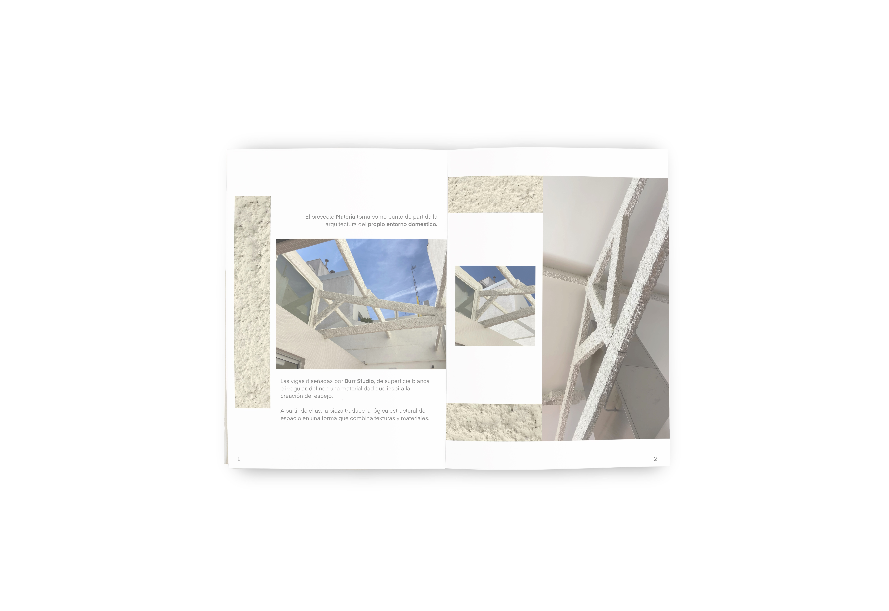
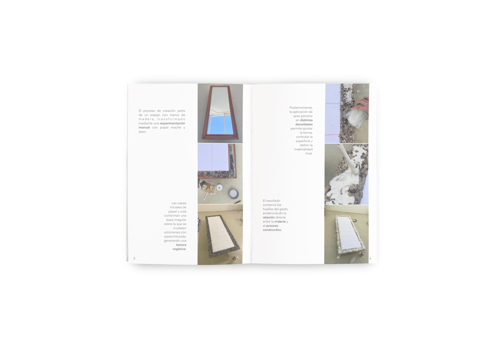
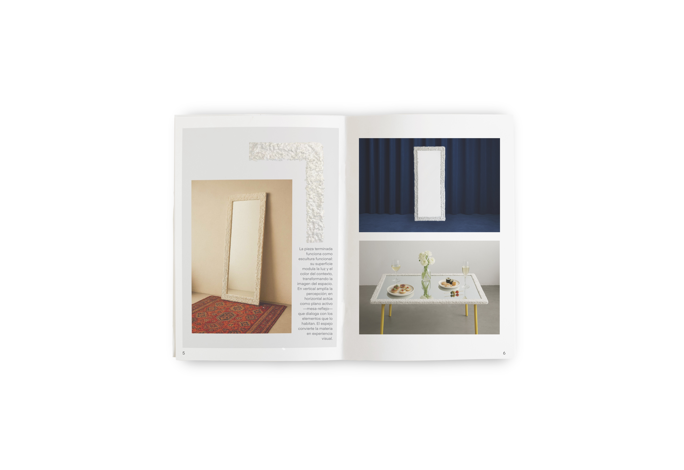

Materia
Object Design · Art Direction · Material Research · Editorial Design
Materia consiste en el diseño y elaboración de un espejo experimental, culminando el proyecto con la maquetación de una revista que documenta el proceso.
El proyecto surge de la arquitectura doméstica y de la materialidad de las vigas diseñadas por Burr Studio. Partiendo de superficies blancas e irregulares, la pieza transforma un objeto cotidiano en un elemento artístico que explora la relación entre materia, textura y luz.



Intervenido con papel maché y yeso parisino, el marco adquiere una textura irregular que redefine la superficie original, modulando la forma y el relieve.
En vertical, amplía la percepción del espacio; en horizontal, actúa como un plano activo que refleja y transforma los elementos que lo rodean.
